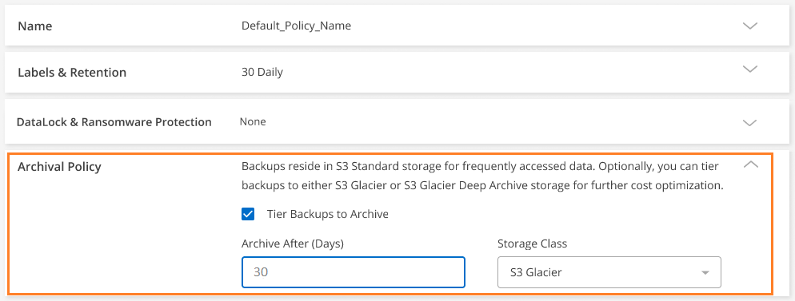

Notas de la versión
Notas de la versión
Ajustes de configuración de la política de backup y recuperación de BlueXP
 Sugerir cambios
Sugerir cambios
El backup y recuperación de datos de BlueXP te permite crear políticas de backup con una variedad de ajustes de configuración para tus sistemas ONTAP y Cloud Volumes ONTAP en las instalaciones.

|
Estas configuraciones de políticas son relevantes únicamente para el backup en el almacenamiento de objetos. Ninguna de estas configuraciones afecta a las políticas de Snapshot o de replicación. En el futuro se añadirán configuraciones de directiva similares para instantáneas y replicaciones. |
Programaciones de backup
El backup y la recuperación de datos de BlueXP te permite crear varias políticas de backup con programaciones únicas para cada entorno de trabajo (clúster). Es posible asignar diferentes políticas de backup a volúmenes con diferentes objetivos de punto de recuperación (RPO).
Cada directiva de copia de seguridad proporciona una sección para Labels & Retention que puede aplicar a sus archivos de copia de seguridad. Tenga en cuenta que la política de Snapshot aplicada al volumen debe ser una de las políticas reconocidas por los archivos de backup y recuperación o backup de BlueXP no se creará.

Hay dos partes del programa; la etiqueta y el valor de retención:
-
Label define la frecuencia con la que se crea (o actualiza) un archivo de copia de seguridad desde el volumen. Puede seleccionar entre los siguientes tipos de etiquetas:
-
Puede elegir uno o una combinación de, cada hora, diario, semanal, mensual, y anualmente plazos.
-
Puede seleccionar una de las políticas definidas por el sistema que proporcione backup y retención durante 3 meses, 1 año o 7 años.
-
Si creó políticas de protección de backup personalizadas en el clúster mediante ONTAP System Manager o la CLI de ONTAP, puede seleccionar una de esas políticas.
-
-
El valor Retention define cuántos archivos de copia de seguridad se conservan para cada etiqueta (intervalo de tiempo). Una vez alcanzado el número máximo de backups en una categoría o intervalo, se eliminan los backups más antiguos de modo que siempre habrá los backups más recientes. Esto también ahorra costes de almacenamiento ya que los backups obsoletos no continúan ocupar espacio en el cloud.
Por ejemplo, diga que cree una política de copia de seguridad que cree copias de seguridad 7 semanales y 12 mensuales:
-
cada semana y cada mes se crea un archivo de copia de seguridad para el volumen
-
en la 8ª semana, se retira el primer backup semanal y se añade el nuevo backup semanal para la 8ª semana (con un máximo de 7 backups semanales)
-
al 13 mes se elimina la primera copia de seguridad mensual, y se añade la nueva copia de seguridad mensual a 13 meses (se mantiene un máximo de 12 copias de seguridad mensuales)
Tenga en cuenta que los backups anuales se eliminarán automáticamente del sistema de origen tras transferirlos al almacenamiento de objetos. Este comportamiento predeterminado se puede cambiar "En la página Advanced Settings" Para el entorno de trabajo.
Protección de DataLock y ransomware
El backup y la recuperación de BlueXP ofrece soporte para la protección DataLock y Ransomware para los backups de volúmenes. Estas funciones le permiten bloquear los archivos de backup y analizarlos para detectar posibles ransomware en los archivos de backup. Este es un ajuste opcional que se puede definir en las políticas de backup cuando se desea contar con protección adicional para los backups de volúmenes para un clúster de.
Ambas características protegen sus archivos de copia de seguridad para que siempre tenga un archivo de copia de seguridad válido para recuperar los datos en caso de un intento de ataque de ransomware en sus copias de seguridad. También resulta útil satisfacer ciertos requisitos normativos en los que los backups deben bloquearse y conservarse durante un cierto período de tiempo. Cuando se habilita la opción DataLock and Ransomware Protection, el bloque de cloud que se aprovisiona como parte de la activación del backup y la recuperación de BlueXP tendrá habilitado el bloqueo de objetos y el control de versiones de objetos.
Esta función no ofrece protección para los volúmenes de origen, solo para los backups de esos volúmenes de origen. Utilice NetApp "Cloud Insights y Cloud Secure", o alguna de las "Protecciones contra el ransomware proporcionadas por ONTAP" para proteger los volúmenes de origen.

|
|
Qué es DataLock
DataLock protege sus archivos de copia de seguridad de ser modificados o eliminados durante un cierto período de tiempo - también llamado almacenamiento inmutable. Esta funcionalidad utiliza la tecnología del proveedor de almacenamiento de objetos para el «bloqueo de objetos». El período de tiempo que el archivo de copia de seguridad se bloquea (y se conserva) se denomina período de retención de DataLock. Se basa en el programa de políticas de backup y la configuración de retención que haya definido, además de un búfer de 14 días. Cualquier política de retención de DataLock que sea inferior a 30 días se redondea a un mínimo de 30 días.
Tenga en cuenta que los backups antiguos se eliminan una vez que caduca el período de retención de DataLock, no después de que caduque el período de retención de la política de backup.
Veamos algunos ejemplos de cómo funciona:
-
Si crea una programación de backup mensual con 12 retentions, cada backup queda bloqueado durante 12 meses (más 14 días) antes de eliminarlo.
-
Si crea una política de backup que crea 30 backups diarios, 7 semanales y 12 mensuales, habrá tres periodos de retención bloqueados. Los backups «30 diarios» se conservarían durante 44 días (30 días más 14 días de búfer), los backups «7 semanales» se conservarían durante 9 semanas (7 semanas más 14 días) y los backups «12 mensuales» se conservarían durante 12 meses (más 14 días).
-
Si crea una programación de backup horaria con 24 retentions, puede pensar que los backups están bloqueados durante 24 horas. Sin embargo, dado que es inferior al mínimo de 30 días, cada backup se bloqueará y conservará durante 44 días (30 días más 14 días de búfer).
En este último caso, puede comprobar que si cada archivo de copia de seguridad está bloqueado durante 44 días, tendrá muchos más archivos de copia de seguridad de los que se tendrían normalmente con una normativa de repetición por hora/24. Normalmente, cuando el backup y la recuperación de BlueXP crea el archivo de backup de 25th, se eliminaría el backup más antiguo para mantener las retenciones máximas en 24 (según la política). En este caso, la configuración de retención de DataLock anula la configuración de retención de directivas de la política de copia de seguridad. Esto podría afectar a los costes de almacenamiento, ya que los archivos de backup se guardarán en el almacén de objetos durante un periodo de tiempo más largo.
Qué es la protección contra Ransomware
La protección contra ransomware analiza sus archivos de backup para buscar pruebas de un ataque de ransomware. La detección de ataques de ransomware se realiza mediante una comparación de suma de comprobación. Si se identifica un posible ransomware en un archivo de copia de seguridad nuevo frente al anterior, ese archivo de copia de seguridad más reciente se reemplaza por el archivo de copia de seguridad más reciente que no muestra signos de un ataque de ransomware. (El archivo que se identificó como un ataque de ransomware se elimina un día después de su reemplazo).
Los análisis de ransomware se producen en 3 puntos del proceso de backup y restauración:
-
Cuando se crea un archivo de copia de seguridad
La exploración no se realiza en el archivo de copia de seguridad cuando se escribe por primera vez en el almacenamiento en nube, pero cuando se escribe el archivo de copia de seguridad siguiente. Por ejemplo, si tiene un programa de backup semanal establecido para el martes, el martes 14 se crea un backup. A continuación, se crea el martes 21 otro backup. El escaneado de ransomware se ejecuta en el archivo de copia de seguridad desde el 14 en este momento.
-
Cuando intenta restaurar datos desde un archivo de copia de seguridad
Puede elegir ejecutar un análisis antes de restaurar datos de un archivo de copia de seguridad o omitir este análisis.
-
Manualmente
Puede ejecutar un análisis de protección contra ransomware bajo demanda en cualquier momento para verificar el estado de un archivo de backup específico. Esto puede resultar útil si tuvo un problema de ransomware en un volumen en particular y desea verificar que los backups de ese volumen no se vean afectados.
Configuración de protección de DataLock y Ransomware
Cada política de copia de seguridad proporciona una sección para DataLock y Protección de ransomware que puede aplicar a sus archivos de copia de seguridad.

Puede elegir entre los siguientes ajustes para cada política de backup:
-
Ninguno (predeterminado)
La protección DataLock y la protección contra ransomware están deshabilitadas.
-
Cumplimiento
DataLock se establece en el modo Compliance en el que ningún usuario puede sobrescribir ni eliminar archivos de copia de seguridad durante el período de retención. La protección contra ransomware está habilitada.
Entornos de trabajo y proveedores de almacenamiento de objetos compatibles
Puede habilitar la protección de datos Lock y ransomware en volúmenes de ONTAP desde los siguientes entornos de trabajo al usar almacenamiento de objetos en los siguientes proveedores de cloud público y privado. En próximos lanzamientos, se añadirán más proveedores de cloud.
| Entorno de trabajo de fuente | Destino de archivo de copia de seguridad ifdef::aws[] |
|---|---|
Cloud Volumes ONTAP en AWS |
Endif de Amazon S3::aws[] ifdef::Azure[] |
Cloud Volumes ONTAP en Azure |
Endif de Azure Blob::Azure[] ifdef::gcp[] endif::gcp[] |
Sistema ONTAP en las instalaciones |
Ifdef::aws[] Amazon S3 endif::aws[] ifdef::Azure[] endif de Azure Blob::Azure[] ifdef::gcp[] endif::gcp[] NetApp StorageGRID |
Requisitos
-
Para StorageGRID:
-
Los clústeres deben ejecutar ONTAP 9.11.1 o posterior
-
Sus sistemas StorageGRID deben ejecutar 11.6.0.3 o posterior
-
El conector debe estar desplegado en sus instalaciones (se puede instalar en un sitio con o sin acceso a Internet)
-
Los siguientes permisos S3 deben formar parte del rol IAM que proporciona el conector permisos:
-
s3:GetObjectVersionTagging
-
s3:GetBucketObjectLockConfiguration
-
s3:GetObjectVersionAcl
-
s3:PutObjectEtiquetado
-
s3:DeleteObject
-
s3:DeleteObjectTagging
-
s3:GetObjectRetention
-
s3:DeleteObjectVersionTagging
-
s3:PutObject
-
s3:GetObject
-
s3:PutBucketObjectLockConfiguration
-
s3:GetLifecycleConfiguration
-
s3:GetBucketTagging
-
s3:DeleteObjectVersion
-
s3:ListBucketVersions
-
s3:ListBucket
-
s3:PutBucketEtiquetado
-
s3:GetObjectTagging
-
s3:PutBucketVersioning
-
s3:PutObjectVersionEtiquetado
-
s3:GetBucketVersioning
-
s3:GetBucketAcl
-
s3:PutObjectRetention
-
s3:GetBucketLocation
-
s3:GetObjectVersion
-
-
Restricciones
-
La función de protección DataLock y Ransomware no está disponible si configuró un almacenamiento de archivado en la política de backup.
-
La opción DataLock que seleccione al activar el backup y la recuperación de BlueXP debe utilizarse para todas las políticas de backup para ese clúster.
-
No puede utilizar varios modos DataLock en un único cluster.
-
Si activa DataLock, se bloquearán todas las copias de seguridad de los volúmenes. No se pueden mezclar backups de volúmenes bloqueados y no bloqueados para un solo clúster.
-
La protección de DataLock y ransomware se aplica a backups de volúmenes nuevos con una política de backup con protección de datos Lock y ransomware habilitada. No puedes habilitar esta función una vez que se haya activado el backup y la recuperación de BlueXP.
-
Los volúmenes de FlexGroup pueden usar la protección DataLock y Ransomware solo si se utilizan ONTAP 9.13.1 o posterior.
Configuración de almacenamiento de archivado
Al utilizar el almacenamiento en cloud de AWS, Azure o Google, puede mover archivos de backup antiguos a un tipo de almacenamiento de archivado más económico o a un nivel de acceso transcurridos un cierto número de días. También puede optar por enviar sus archivos de copia de seguridad al almacenamiento de archivos inmediatamente sin ser escrito en el almacenamiento en la nube estándar. Simplemente ingrese 0 como el “Archivo después de días” para enviar su archivo de copia de seguridad directamente al almacenamiento de archivos. Esto puede ser especialmente útil para los usuarios que rara vez necesitan acceder a los datos de backups en la nube o los usuarios que están reemplazando una solución de copia de seguridad a cinta.
No es posible acceder a los datos de los niveles de archivado inmediatamente cuando sea necesario y el coste de recuperación será superior, por lo que debe tener en cuenta con qué frecuencia puede necesitar restaurar los datos de los archivos de backup antes de decidir archivar los archivos de backup.
|
|
|
Cada directiva de copia de seguridad proporciona una sección para Archival Policy que puede aplicar a los archivos de copia de seguridad.

-
En GCP, las copias de seguridad están asociadas con la clase de almacenamiento Standard.
Si tu clúster on-premises utiliza ONTAP 9.12.1 o posterior, puedes elegir organizar en niveles los backups antiguos en el almacenamiento Archive en la interfaz de usuario de backup y recuperación de BlueXP después de un determinado número de días para optimizar los costes. "Más información sobre el almacenamiento de archivos de Google".
-
En StorageGRID, las copias de seguridad están asociadas con la clase de almacenamiento Standard.
Si su clúster de on-prem utiliza ONTAP 9.12.1 o superior y su sistema StorageGRID utiliza 11.4 o superior, puede archivar archivos de backup antiguos en el almacenamiento de archivado en cloud público.